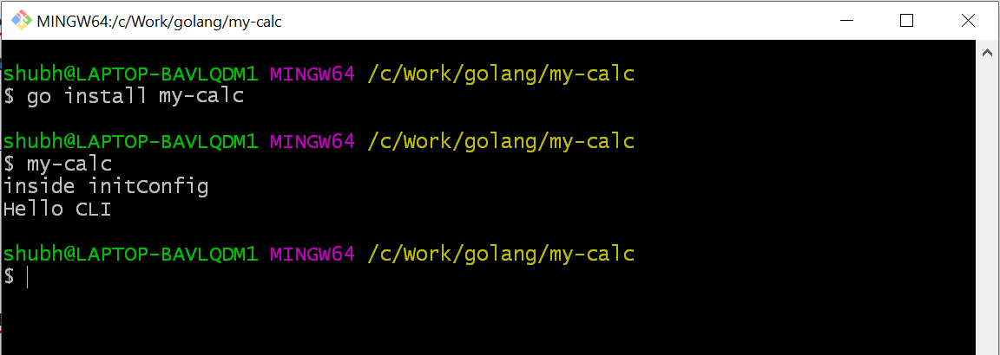
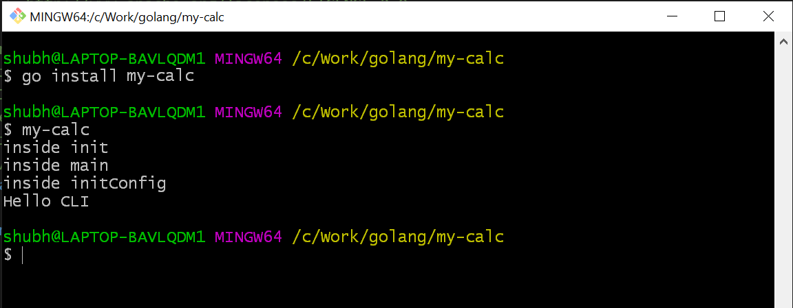
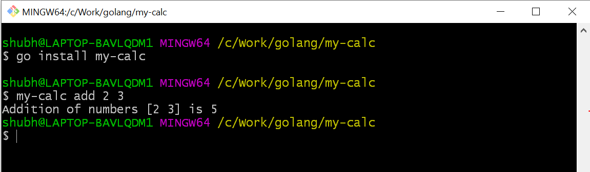
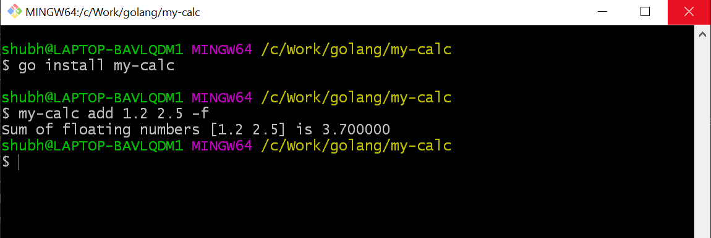
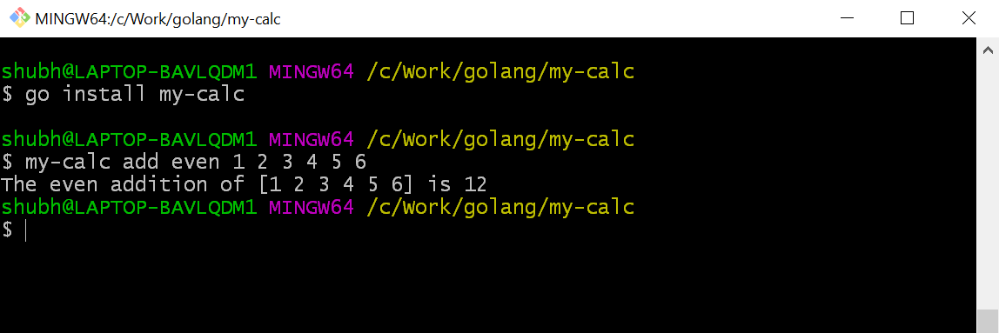
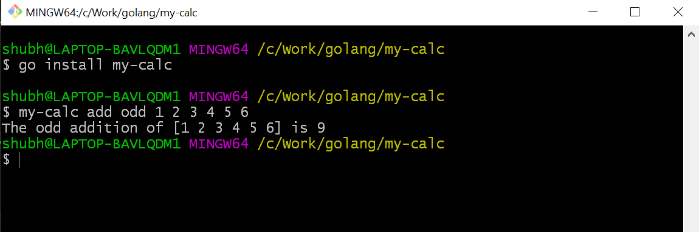

Have you ever wonder why in the world of GUI, CLI still exist? You’ll better understand it when you build one of your own.
When you learn golang then it is very often that you’ll come across that ‘golang is great to build cli tools’. This fascinated me too. So, I tried to get my hands dirty and found a few tutorials of creating a cli but most of all are not basic. In this tutorial, I’ll try to smooth the learning curve.
This is the basic cli application where we are going to cover basic cli operations. I am planning to write another article with advance cli operations but that’s for later.
We are creating a simple mathematical cli which will be capable of doing the following 2 jobs:
- addition of numbers
- addition of only even or odd numbers
I know these jobs don’t meet your expectations but trust me, after this, you will feel comfortable with building a cli.
What is CLI? (Command Line Interface)
CLI works on the basic principle of software engineering, takes the input, process it and gives the output. In the cli tool instead of a flashing frontend, it takes the input from the black window. Remember, Matrix Trilogy.
If you are using Windows just type cmd or powershell in the startand enter, the black window or blue window is a cli.

In Mac or Linux it is known by the name terminal .
A command-line interface (CLI) is a means of interacting with a computer program where the user (or client) issues commands to the program in the form of successive lines of text (command lines). The program which handles the interface is called a command-line interpreter or command-line processor. — wikipedia
There are many CLIs’ you might work on like npm, node, go, python, docker, Kubernetes etc. All are an ideal interface to interact with the software.
Why they are still using CLI?
- It is lightweight and fast.
- Minimal or no dependencies.
- Best for system administration and task-based automation etc.
Enough of theory, let’s start with the requirements:
- golang installed (I am using go1.11.5 windows/amd64)
- Cobra library (
go get -u github.com/spf13/cobra/cobra) - Any code editor of your choice. (I am using VS Code)
I recommend to use VS code and install the
goextension by Microsoft. This will update the import statement according to the code. If you use a new package, it will import that package on save. If a package is imported and not used, it will remove that package from the import.
A little introduction to the Cobra library. We will use cobra cli to use the cobra library. We will use a cli to build a cli 😃
Cobra is both a library for creating powerful modern CLI applications as well as a program to generate applications and command files.
Many of the most widely used Go projects are built using Cobra, such as: Kubernetes, Hugo, Docker (distribution) etc. — Github
Cobra Concepts
Cobra is built on a structure of commands, arguments & flags.
- Commands represent actions
- Args are things
- Flags are modifiers for those actions
The basic structure will be like a simple sentence
APPNAME Command Args --Flags or APPNAME Command --Flags Args
For Ex.
git clone URL -barego get -u URLnpm install package --savedocker run image -d
Create a new project directory outside the GOPATH. I have created my-calc project directory for this tutorial. You can name any of your choices.
Creating projects outside the GOPATH ease the importing local files. Initialize modules in the project. This module will keep all the libraries and dependency require and used in this project. It is similar to the package.json in the nodejs. To read more about the modules, please read this great article.
A module is a collection of related Go packages that are versioned together as a single unit.
Modules record precise dependency requirements and create reproducible builds. — wiki
Open the project directory in the command line of your choices. I am using bash. Once you are inside the project directory, run the below command to initialize the modules.
go mod init my-calc
You can notice that it creates a go.mod file in the project.
Note: Creating modules inside the
$GOPATHis disabled by default. You will get this error if you run above command —go: modules disabled inside GOPATH/src by GO111MODULE=auto; see ‘go help modules’. If you still want to create the go modules inside the$GOPATHthen first setGO111MODULEenvironment variable toon.export GO111MODULE=on
Now whenever you use any third-party packages in the project, it’ll save it as a dependency with their version. In this way, even if a breaking change introduces in the new version of the library, your project will work as expected.
If you still haven’t installed the cobra library, you can install it using below command.
go get -u github.com/spf13/cobra/cobra
Initialize the cli scaffolding for the project using cobra initcommand.
cobra init my-calc
It will initialize the my-calc project with cobra library. You can observe that it created a few files in the project.
▾ my-calc/
▾ cmd/
root.go
main.go
The main.go is the entry point of the cli . Inside the main.go it is calling the Execute function of the cmd/root.go .
// main.go
package main
import "my-calc/cmd"
func main() {
cmd.Execute()
}
Let’s examine the root.go .
rootCmd
Root command is the base command of any cli. For Ex. go get URL — go is the root command here and get is the child command of the go. In the root.go it is initiating the rootCmd struct variable with the cobra command. All the other commands in the cli will be a child of the rootCmd.
Open the root.go in the editor and inside the rootCmd uncomment the
Run: func(cmd *cobra.Command, args []string) {},
And paste the fmt.Println("Hello CLI") inside the curly braces.
Run: func(cmd *cobra.Command, args []string) {fmt.Println("Hello CLI"},
⚠️ Don’t remove the comma after the closing curly braces. It will throw syntax error.
Open the terminal inside the my-calc project and run
go install my-calc
This command will generate the binary or executable file of the project in the $GOPATH/bin folder.
Now run my-calc in the terminal. As it is saved in the bin folder you don’t have to set the environment variable for this.
The name of cli is the rootCmd. my-calc is the rootCmd.
You will see the output similar to this.

init
This is the first function which gets called whenever a package initialize in the golang. The cobra.OnInitialize(funcDeclarations) append the user-defined functions in the command’s initialization. Whenever the command run or called it will first execute all the functions in the command’s initialization and then it will run the execute method. This initialization can be used in loading the configuration file or can be used as constructor. It all depends on your use case and your creativity.
I believe I lost you here. Let’s understand this with an example.
In the root.go , the command is the rootCmd.
The cobra.OnInitialize(initConfig) append the initConfigfunction declaration in the rootCmd’s initialization. So, whenever the rootCmd ‘s execute method (RUN: func) run, the rootCmd will first run the initConfigfunction. Once the execution of all the initialize functions over, it will run the RUN: func execution method of rootCmd.
To visualize it, add a print message in the initConfig function.
func initConfig() {
fmt.Println("inside initConfig")
...
Save the changes. Open the terminal inside the my-calc project.
Rebuild the binary go install my-calc.
go install my-calc
Run my-calc. Whenever you’ll make any changes in the cli you have to rebuild the binary. Run go install my-calc to reflect it in the cli commands.

You can see that initConfig run first and later Hello CLI .
To understand the complete flow of cli, add a message inside the init function and a message inside the main func in the main.go.
// root.go
func init() {
fmt.Println("inside init")
cobra.OnInitialize(initConfig)
...
// main.go
func main() {
fmt.Println("inside main")
cmd.Execute()
}
Save the changes. Rebuild the binary go install my-calc and run my-calc.

Now, you know the cli command flow.
The last thing in the init function is flags .
Flags are like modifiers to the command. You can think of them as conditional actions. We will learn more about it later in the tutorial.
There are 2 types of flags Persistent Flags and Local Flags.
- Persistent Flags: This flag will be available to the command it is assigned as well as all the child or subcommands of the command.
- Local Flags: This flag is only available to the command which it is assigned to.
initConfig
This function is setting the configuration path in the home directory and config filename is .my-calc . It will use the configuration file if it exists.
The viper library is famous for configuration solution for go application. It reads from JSON, TOML, YAML, HCL, envfile and Java properties config files. It does much more than reading configuration. To learn more about it, follow this link.
With this function, we completed the root.go examination. It is a bit lengthier, but it is good to understand what we are using.
Note: Now if you want, you can remove all the print statements from the
root.goandmain.go. I have removed all the print statements to keep the code clean.
It’s time to add some commands in our cli. We already created one command which is my-calc asrootCmd which returns Hello CLI.
add numbers
Open the terminal inside the project directory and create a command named add . The cobra command to add a new command is
cobra add <commandName>
cobra add add
// output
add created at C:\Work\golang\my-calc
Check the cmd folder, an add.go file is added in it.
Open the add.go . It is similar to the root.go .
First, an addCmd struct variable is declared of type *cobra.Command .
The *cobra.Command have RUN which is a func and takes pointer of *cobra.Command and a slice of string []string.
Then it is initialized in init function. In the init, it is added to the rootCmd. We can understand it as addCmdis the sub-command or child command of the rootCmd.
func init() {
rootCmd.AddCommand(addCmd)
In the terminal, rebuild the binary using go install my-calc command and run my-calc add.

The add command is working fine. It’s time to modify it to add a series of numbers.
The commands only take a slice of string as an argument. To add the numbers, we first have to convert the string into int then return the result. We will use strconv library to convert the string to int.
Import the strconv package.
import (
"fmt"
"strconv"
"github.com/spf13/cobra"
)
Inside the add.go, create a new addInt function.
// add.go
func addInt(args []string) {
var sum int
// iterate over the arguments
// the first return value is index of args, we can omit it using _
for _, ival := range args {
// strconv is the library used for type conversion. for string
// to int conversion Atio method is used.
itemp, err := strconv.Atoi(ival)
if err != nil {
fmt.Println(err)
}
sum = sum + itemp
}
fmt.Printf("Addition of numbers %s is %d", args, sum)
}
Save the changes.
In the addCmd variable, update the RUN func. Remove the print message and call the addInt function with args.
// addCmd
Run: func(cmd *cobra.Command, args []string) {
addInt(args)
},
Rebuild the binary using go install my-calc .
Run my-calc add 2 3 .
⚠️Don’t forget the space between the arguments.

You can pass as many arguments as you want. If you remember the args is a slice of string. But there is a limitation in this function. It can only add integers not decimal number. In the addInt function we are converting the string into int not in float32/64 .
It is time to introduce a flag in the addCmd . This flag will help the cli to decide if it is an int operation or float.
In the add.go , inside the init func, create a local flag of the bool type, Flags().BoolP. Its name will be float , shortened name f , default value false and description. The default value is very important. It means even if flag is not called in the command, the flag value will be false . For bool type, if a flag is called it will toggle the default.
// add.go
func init() {
rootCmd.AddCommand(addCmd)
addCmd.Flags().BoolP("float", "f", false, "Add Floating Numbers")
}
Create a new addFloat function in the add.go
// add.go
func addFloat(args []string) {
var sum float64
for _, fval := range args {
// convert string to float64
ftemp, err := strconv.ParseFloat(fval, 64)
if err != nil {
fmt.Println(err)
}
sum = sum + ftemp
}
fmt.Printf("Sum of floating numbers %s is %f", args, sum)
}
This function is the same as addInt except, it is converting string to float64.
In the addCmd RUN function, it will call the addInt or addFloat according to the flag. If flag --float or -f is passed then it will call addFloat .
// add.go
// addCmd
Run: func(cmd *cobra.Command, args []string) {
// get the flag value, its default value is false
fstatus, _ := cmd.Flags().GetBool("float")
if fstatus { // if status is true, call addFloat
addFloat(args)
} else {
addInt(args)
}
},
Save all the changes. Rebuild the binary using go install my-calc.
Run my-calc add 1.2 2.5 -f or my-calc add 1.2 2.5 --float

You can do lots of things with flags. You can even pass values to flags like a slice of int, float, string etc.
The basic addition of operation implementation is completed.
Let’s expand it by adding sub-commands to the addCmd.
add even numbers
Open the terminal in the project directory and create a new even command.
cobra add even
The even command as even.go added in the cmd folder.
Open the even.go in the editor. Change rootCmd to addCmd in the init .
// even.go
func init() {
addCmd.AddCommand(evenCmd)
...
}
The addCmd.AddCommand(evenCmd) will add evenCmd as child or subcommand of the addCmd .
Update the evenCmd struct variable’s RUN method.
// even.go
Run: func(cmd *cobra.Command, args []string) {
var evenSum int
for _, ival := range args {
itemp, _ := strconv.Atoi(ival)
if itemp%2 == 0 {
evenSum = evenSum + itemp
}
}
fmt.Printf("The even addition of %s is %d", args, evenSum)
},
It will first convert the string into int using strconv package, then adding only even numbers.
Save all the changes. Rebuild the binary using go install my-calc .
Run my-calc add even 1 2 3 4 5 6

The my-calc is the root command, add it the command of the rootCmd and even is the command (subcommand) of the addCmd .
add odd numbers
This is same as evenCmd . Instead of adding even numbers, it will add odd numbers.
Open the terminal in the project directory and create a new odd command.
cobra add odd
The odd command as odd.go added in the cmd folder.
Open the odd.go in the editor. Change rootCmd to addCmd in the init.
// odd.go
func init() {
addCmd.AddCommand(oddCmd)
...
}
The addCmd.AddCommand(oddCmd) will add oddCmd as child or subcommand of the addCmd.
Update the oddCmd struct variable’s RUN method.
// odd.go
Run: func(cmd *cobra.Command, args []string) {
var oddSum int
for _, ival := range args {
itemp, _ := strconv.Atoi(ival)
if itemp%2 != 0 {
oddSum = oddSum + itemp
}
}
fmt.Printf("The odd addition of %s is %d", args, oddSum)
},
It will first convert the string into int using strconv package, then adding only even numbers.
Save all the changes. Rebuild the binary using go install my-calc.
Run my-calc add odd 1 2 3 4 5 6

The my-calc is the root command, add it the command of the rootCmd and odd is the command (subcommand) of the addCmd.
Congratulations! You created your own cli in golang with cobra.
The complete code is saved on Github.
The my-calc cli project is complete. The main aim of this tutorial to understand the basics of the cobra library. The tutorial covered most of the basic operations required to create a cli. I will keep updating it with more basic operations if it requires. I hope I smoothened the learning curve of creating cli. Thanks for your time to read the tutorial. I hope you learned something and it is worth your time.
Please give your valuable feedback on this tutorial. I’ll make changes accordingly.
If you like my work and want to support me. You can buy me a coffee.